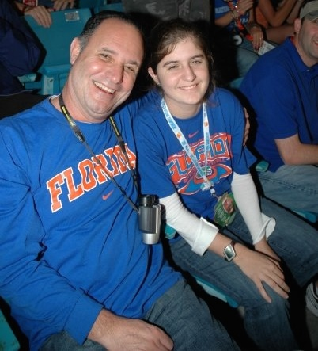

Professional
I am currently a social media intern at the University of Florida Hillel, a Jewish organization right off campus, across from Ben Hill Griffin Stadium. I am in charge of the @ufhillel Instagram. I am responsible for posting images with captions almost everyday about various topics and events. I use an application called "Afterlight" which helps me enhance photos and add borders so that the photos are optimized for the Instagram application.

Miami, Florida. November 2014.
What's Next?!
I hope to use my social media skills in the future after I graduate from UF. I would love to be a social media manager for a sports team or if that doesn't work out, I would not mind finding some area of expertise in media sales/advertising.
Personal
In addition to the interests I described on my about me page, there are still a couple more I would like to discuss in detail. My favorite interest is in sports, with a focus on football. I grew up watching/attending football games so it is one of my favorite activites. I like other sports as well and keep up with the latest sports news and scores of games. My favorite teams are the Florida Gators, Miami Heat, and the Miami Dolphins.

2009 National Championship game in Miami, Florida.

Tim Tebow's famous chomp from that game.
Reading
If I am not busy watching/attending a sporting event, taking photos, or listening to music, I probably have my nose in a book. I have grown to love reading any genre, with my latest obsession being mysteries. Gone Girl has become one of my favorites. Other books that I consider "must-reads" are Perks of Being a Wallflower, The Fault in Our Stars, Harry Potter, Hunger Games and Catcher in the Rye.